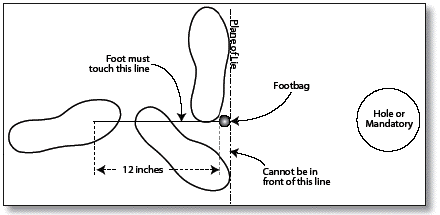

Article IV - Footbag Golf
Outline of Contents
- 402.01 Footbags Used in Play
- Figure 8 - Foot Placement for Fairway Drive
- 403.10 Playing the Wrong Lie
- 404.01 Special Conditions
- 404.04 Rain or Hazardous Conditions
- 404.05 Disqualification and Suspension
- 404.06 Grouping and Sectioning
A.
General: Players should take care not to produce any distracting noises or any potential visual distractions for other players who are kicking. Examples of discourteous actions are: yelling, freestyling, slapping course equipment, kicking out of turn, throwing or kicking golf bags, and advancing on the fairway beyond the away player. Yelling "Fore" at an appropriate time to warn someone in danger of being struck by a footbag is not a violation of courtesy. Interpretation of courtesy also includes other actions as expected by the rules, such as: refusal to assist in the search for a lost footbag, refusal to move equipment, refusal to keep score properly, etc.. Players should not kick until they are certain that the kicked footbag will not distract another player or potentially injure anyone present. Players should watch the other members of their group kick to aid in the locating of errant kicks and to ensure compliance with the rules.
B.
Smoking: Courtesy also dictates that players who smoke should not allow their smoke to disturb other players.
C.
Penalty: A player violating a courtesy rule may be warned by any affected player, even if from another group, or by an official, with all players of the group advised of the warning. A one-kick penalty will be assessed for each subsequent infraction in the same round. Repeated violations of courtesy rules may result in disqualification in accordance with section 404.05.
A.
Tee-off Order: Tee-off order on the first tee is determined by the order in which the scorecards were filled out. Tee-off order on all subsequent tees is determined by the score on the previous hole, with the lowest score kicking first, and so on. If the previous hole was a tie, count the score back over previous holes until the tie is resolved.
B.
Order of Play: The player farthest from the hole, (the "away" player), always kicks first. Kicking or putting out of order is a courtesy violation, and may be called by any player in the group.
C.
Practice Kicks: If a player takes a practice kick or an extra kick with any footbag at any time after the start of a round and prior to finishing the last hole of the round, a one-kick penalty is incurred. A hand toss or hand roll of a footbag or other object for the purpose of testing course conditions is considered a practice shot and a one-kick penalty will be incurred. The infraction must be observed by any two players or an official.
D.
Player Responsibility: It is the responsibility of the player to play the course correctly. If a player kicks from the correct tee, and either misplays a mandatory dog-leg or kicks toward an incorrect target, and the mistake is discovered at any time prior to the player's scorecard being turned in for the round, the player may not re-tee and must proceed to play the hole correctly. If the player in this case has already kicked into a target, his lie must be marked on the ground within one meter (3 feet) of that target with no relief. If a player kicks from an incorrect teeing area, and the mistake is discovered prior to the player's scorecard being turned in, the player must re-tee correctly and the incorrect kicks will be added to his score as practice kicks. In any case of the course being played incorrectly, if the mistake has not been corrected at the time that the player's scorecard is turned in for that round, the player shall retroactively incur a six-kick penalty.
E.
Playing Through: During tournament play, no group may play through the group ahead unless the group ahead is required to stand aside in accordance with the rules (see rule 403.09 and 404.03-C).
A.
Limit: A maximum of 30 seconds is allowed to each player to make a kick after:
1. the previous player has kicked;
2. the player has taken reasonable time to arrive at the footbag and place a marker;
3. the playing area is clear and free of distractions.
B.
Infractions: On the first infraction per round, the player is warned by any two players of the group or an official. A one-kick penalty will be assessed for each subsequent infraction in the same round if observed by two or more players of the group or an official.
402.01. Footbags Used in Play
A.
Dimensions: Footbags must fall within the specifications set forth under Article 1, Section 107
B.
Changing Footbags: Footbags may be interchanged at any time throughout the course.
C.
Approval: Footbags must be specifically approved by the tournament director if questioned by another player in the contest, but in no case will the footbag be approved if it is in violation of any of the above specifications.
402.02. Markers
Each player must mark his lie with a marker having a diameter of between 2 and 6 and a height not exceeding 3. A non-playing footbag or mini disc is suggested.
A.
Dimensions: The regulation size for a footbag golf hole is 18 in diameter, and standing 18 off the ground.
B.
Completion: To complete a hole the footbag must land inside the designated hole and come to rest. If the footbag comes to rest on the edge of the hole, it is considered in. If the footbag spirals within the hole and comes out, it must be played from where it comes to rest, and is not considered in.
C.
Obstructions: No obstructions or out-of-bounds are allowed within five feet of the target.
A.
Green Size: The size of the greens can vary, with the distance from the edge of the green to the center of the hole ranging from 20 feet to 50 feet.
B.
Marking the Greens: There must be a definite outline of the green area so that players know whether the rollup rule (403.13) applies or not.
C.
Sloping Green: Construction of greens should facilitate the balance and concentration necessary for accurate putts. Greens should be reasonably level and open. Greens must be as close to level as possible within 5 feet of the center of the hole, or may be considered an obstruction.
403.01. Legal Kicks
All kicks must begin with a hand toss such that the footbag is in the air prior to the kick. The footbag must be completely separated from the hand and shoe prior to contact and must be struck prior to contact with the ground.
403.02. Teeing Off
Play will begin on each hole by the player kicking from the teeing area. All kicks must be started with a hand toss. The player's supporting point closest to the hole at the time of the kick must be placed within a six-foot-square tee box. Teeing off improperly constitutes a stance violation, and will be handled in accordance with section 403.04-C. Once a player has teed off, he must complete the hole.
A.
General: After the tee-off, the kicked footbag must be left where it came to rest until a legal marker is placed on the ground between the hole and the footbag, touching the kicked footbag. (See Sections 403.04 and 403.05 on placing the marker when the kicked footbag is not playable.) The marker may not be moved until the kick is completed.
B.
Violations: A warning will be given by two or more players in the group, or by an official, for the first violation of this section during a round. A one-kick penalty will be assessed for each subsequent violation if observed by two or more players of the group or an official.
C.
Breakage: If a kicked footbag should break and come to rest in more than one piece, the lie of the largest piece will be taken as the result of the kick.
A.
General: During a kick while on the fairway, one of the player's supporting points (or foot) must be placed within 12 behind the lie marker and on the imaginary line running from the hole through the center of the marker. This is illustrated in Fig. 6. When the footbag is kicked, no supporting point contact may be made with the marker or any other object closer to the hole than the rear edge of the marker. Stepping past the marker is permitted after the footbag is kicked, except when putting within the marked area of the green surrounding the hole.
-
Figure 8 - Foot Placement for Fairway Drive

-
Allowed footbag placement during a drive. The foot must contact an imaginary line extending 12 inches behind the footbag on a line drawn from the hole (or nearest "mandatory") through the lie of the footbag. NOTE: for on-green putting, the 12-inch line does not exist, and the foot must be placed ON the lie, but not past it.
B.
Putting: Any kick from within the marked area of the green is considered a putt. During a kick on the green, the support foot must be placed directly on the lie of the footbag. A follow-through after a putt that causes the kicker to make any supporting-point contact closer to the hole than the rear edge of the marker constitutes a falling putt and is not allowed. The player must demonstrate full control of balance before advancing toward the hole. See also 403.12.
C.
Violations: To be valid, a stance violation must be called within three seconds after the infraction. The call must be made by another member of the group, besides the kicker, or by an official. When the call is made by a player, it must subsequently be confirmed by at least one other player in the group, not excluding the kicker. A player will receive a warning for the first violation of a stance rule in the round. Subsequent violations of any type of stance rule in the same round will incur a one-kick penalty. All stance violations must be re-kicked prior to subsequent play by other members of the group. Stance violations occurring outside the greens area must be re-kicked from the original lie. Unsuccessful putts within the marked area of the green will be re-kicked from where the footbag comes to rest after the stance violation occurred.
A.
General: Obstacles to a player's stance or kicking motion that are permanent, or integral parts of the course cannot be moved or bent or in any way altered by the player to facilitate the kick, except as to allow the player to take a legal stance on the lie. When playing the lie, the player must choose a stance that will result in the least movement of any part of the obstacle between the lie and the hole.
B.
Non-permanent Obstacles: Relief may be obtained from non-permanent obstacles to a player's stance or kicking motion. Non-permanent obstacles are things such as: casual water or mud, loose leaves, broken branches no longer connected to a tree, other player's equipment, moveable trash cans, motor vehicles, harmful insects or animals, and spectators who prevent safe play. In situations where the permanent or fixed nature of an obstacle is unclear, it will be determined by an official. Prior to the start of a round, the tournament director may designate non-permanent areas from which relief may be obtained.
C.
Procedure: To obtain relief, the player must first attempt to remove the obstacle. If this is impractical, the lie may be relocated to the nearest playable lie, no closer to the hole (unless that is the only alternative to avoid an out-of-bounds area), and not more than 16 feet (5 meters) from the original lie, as agreed to by a majority of the group or an official.
D.
Violations: Violation of this section will result in a one-kick penalty, if observed by two or more players of the group or an official. If, in violating this section, a player consciously damages anything on the course, the player will incur a two-kick penalty if observed by two or more players of the group or an official. The player may be disqualified from the tournament, in accordance with section 404.05, if the director deems the actions serious enough.
403.06. Unsafe Lie
A player may declare a lie to be unsafe and ask that it be relocated to a new playable lie within 16 feet (five meters) of the unsafe lie, with a one-kick penalty. If the player decides that there is no suitable lie within 16 feet (five meters) of the unsafe lie, the player may relocate the lie to a suitable lie on the fairway, and take a two-kick penalty. In either case, the new lie may be no closer to the hole than the unsafe lie.
A.
General: A kicked footbag that hits another player, spectator, or animal will either be played where it comes to rest, or if it is deflected out-of-bounds or was caught and thrown, marked as close as possible to the point of contact, as determined by a majority of the group or an official. Players should not stand or leave their equipment where interference with the flight or path of a footbag could easily occur. The away player may require other players to mark their lie or move their equipment before making a kick if the player believes that either could interfere with the kick. If a footbag at rest or a marker is moved, the footbag or marker will be replaced as close as possible to the original lie, as determined by a majority of the group or an official, with these exceptions: a footbag that rests in an out-of-bounds area or is in a lie above ground shall be marked from its new location if it is moved by an outside agent, such as the wind or a competitively kicked footbag.
B.
Violations: Any player who consciously alters the course of a kicked footbag, or consciously moves a kicked footbag at rest or a marker, other than by the action of a competitively kicked footbag, will receive a two-kick penalty if observed by any two players of the group or an official.
A.
Below One Foot: If a footbag comes to rest above the ground but below one foot in a tree or another object on the course, its lie will be marked on the ground directly below it. If the point directly below the lie, above ground, is an out-of-bounds area, the lie will be declared out-of-bounds and marked and penalized in accordance with section 403.09. If some other reason prevents the lie from being marked directly below the footbag, the lie will be marked as close as possible behind the point directly below the footbag on the imaginary line through this point and the hole.
B.
Above One Foot: If a footbag comes to rest above one foot, as measured from the lowest point of the footbag to the ground directly below it, the kicker will be assessed a one-kick penalty. The player shall proceed from a lie marked in accordance with section 403.08-A. If the footbag falls, unassisted by a player or spectator, to a position less than one foot above the ground before the player arrives at the lie, after taking a reasonable time to do so, no penalty will be incurred.
C.
Tampering: If a footbag in a questionable lie above the ground is moved by any player prior to a determination of its one foot status by a majority of the group or an official, that player will receive a two-kick penalty. The footbag will be assumed to have been below one foot and will be marked in accordance with rules 403.08-A and 403.07-B.
A.
General: A footbag will be considered out-of-bounds only when the out-of-bounds area can be clearly seen between the edge of the footbag and the in-bounds line at the time the player arrives at the footbag or the point where it was last in-bounds, after taking a reasonable time to do so.
B.
Penalty: A player whose footbag has come to rest out-of-bounds will incur a one-kick penalty. The footbag will then be brought in-bounds to a playable lie at the point where it left the in-bounds area, as determined by a majority of the group or an official. If the in-bounds status of a lie is questionable, either a majority of the group or an official shall make the determination.
C.
Tampering: If a questionable lie is picked up by any player prior to such a determination, that player will receive a two-kick penalty. The footbag will be assumed to have been in-bounds and will be marked in accordance with section 403.07-A.
403.10. Playing the Wrong Lie
A.
General: When one player's lie is played by another player, play must stop and the offending player must immediately attempt to locate the player whose lie was wrongly played. The group will stand aside and allow other groups to play through while the player is located and the offending player assists in locating the correct lie.
B.
Correction: If the mistake can be corrected before the offending player finishes the hole, the offending player will resume play from his correct lie. Each kick made from the incorrect lie prior to the discovery of the error will be counted as a practice kick and added to the offending player's score. In addition, the offending player will incur a two-kick penalty.
C.
Resolution: The player whose lie was incorrectly used will be given a playable lie as close to the original lie as possible, as determined by a majority of his group or an official. If the incorrectly used lie is discovered to be a footbag that has already been declared a lost footbag by a prior group, then the player whose footbag was lost will not be allowed to replay from the lie.
A.
General: A footbag will be declared lost if the player cannot locate it within two minutes after arriving at the spot where it was last seen. Two players or an official must note when the timing of the two minutes begins. All players of the group must, upon request, assist in searching for the footbag for the full two minutes before the footbag is declared lost.
B.
Resolution: If a footbag is declared lost, a marker will be placed on a playable lie, nearest the spot where the footbag was last seen, as agreed to by a majority of the group or an official. A one-kick penalty will be assessed. If a footbag that was declared lost is discovered, prior to the official posting of scores for that round, to have been incorrectly played by another player, the offended player will be entitled to replay the footbag from its correct lie in accordance with section 403.10-C. If the player elects to replay from the correct lie, it must be witnessed by at least two players of the group or an official. The player may not re-tee the hole and no other holes may be replayed. The player's score for the hole will then consist of any kicks and penalties prior to the footbag becoming lost plus those made by the player while replaying. Regardless of the player's previous score on the hole, the new score must stand.
403.12. Mandatory Dog-Leg
A.
General: If a hole has a mandatory dog-leg, the footbag must be kicked past the dog-leg to the correct side, as indicated on the tee sign or at the dog-leg, before the player may complete the hole. All progress toward the hole must play around the dog-leg in the designated direction. If the footbag should pass a dog-leg on the incorrect side, the player must kick the footbag back to "unwind", in order to pass to the correct side.
B.
Lie Marking: When marking the lie, if an imaginary straight line from the lie to the hole does not pass to the correct side of the dog-leg, then the dog-leg object shall be considered to be the hole for the application of all stance and marker rules.
C.
Sighting: A footbag passing above the height of the mandatory is considered good if two or more players judge it to have passed to the correct side of the imaginary line projecting up from the center of the mandatory.
Roll-ups: A kick from outside the green area is considered good if it comes to rest on the 18-inch-diameter base of the hole. It is okay for the footbag to bounce or roll onto the base in this case. Putts from within the green area must travel by air into the hole; the base does not count in this case.
404.01. Special Conditions
Rules governing special conditions that may exist on the course will be clearly defined and explained to the players prior to the start of the tournament. No rules may be stipulated that conflict with the IFC rule book.
A.
General: At a scheduled time, scorecards shall be distributed to the players listed first on each tee-off hole. After the cards have been distributed, groups shall be given adequate time to reach their assigned tees.
B.
Signal: A loud noisemaker, such as an air horn, is to be used to indicate that there are two minutes remaining until tee-off. This signal shall be a series of short blasts. At this time, players are to end practice and move promptly to their tee areas. An extended blast of the noisemaker begins the round and signals the scorekeepers to call the kicking orders.
C.
Late Arrival: If a player is not present to kick when called, the scorekeeper shall allow 30 seconds. If the player has not kicked by then, a score of par plus three is to be entered for that hole. This procedure continues on any subsequent tee-offs for which a player is absent. No holes will be replayed.
D.
Failure to Appear: If a complete round is missed, the player will be disqualified in accordance with section 404.05.
E.
Finishing a Hole: Once a player has teed off, at any hole, the player must complete that hole prior to teeing off at a subsequent hole.
A.
General: After each hole is completed, the scorekeeper will call out each player's name in the order it appears on the scorecard. The called player will answer with the score in a voice that is audible to all players of the group and to the scorekeeper. The scorekeeper will record that score and read it back, in a voice that is audible to all players of the group.
B.
Notations: Warnings and penalties given to a player for a rule infraction should be noted on the scorecard, indicating rule number violation and on which hole it occurred.
C.
Disagreements: If there is any disagreement about the score a player reports, the group must review the hole and attempt to refresh the player's memory. If this is not possible, the players will call for an official and stand aside to allow following groups to play through. The official will make the ruling based on the rules and the consensus of the group. Play by the group may not resume until the dispute is settled. The ruling by the official is final and the score will be entered on the scorecard and signed by the official.
D.
Verification: At the end of the round, all players and the scorekeeper will sign their scorecard(s) indicating that all players and the scorekeeper attest to the accuracy of the scores on each hole and the total scores. However, total scores are not official until posted by the tournament director.
E.
Adjustment: If all the players in the group agree that a score was recorded in error, the score may be changed prior to the scorecard being turned in. After the card is turned in, the score will stand with no appeal. If it is subsequently determined that a score for a hole or a total score was incorrectly recorded, the director shall:
1. require the affected player's score to stand if the error resulted in a higher score; or,
2. add three penalty strokes to the correct score for each erroneous stroke in the player's favor.
F.
Scorekeeping: Players of the group shall rotate the scorekeeping responsibility proportionally. The first player listed on the card is responsible for picking up the scorecard(s) prior to the start of the round, and is the first scorekeeper. All players are responsible for returning their scorecards within 15 minutes after the completion of a round. Failure to do so will result in an automatic six-kick penalty.
G.
Penalties: A penalty may be assessed at whatever time the infraction is discovered and up until, but not after, the posting of the official scores by the director, with these exceptions: penalties for playing the course incorrectly or for playing from the wrong lie may be assessed retroactively at any time prior to the completion of the tournament.
404.04. Rain or Hazardous Conditions
A.
General: If, in the opinion of the director, excessive rain or hazardous conditions exist that make it impractical or dangerous to continue play, the round will be stopped. The signal to stop will be the same as the signal to start. Players should immediately stop play and return to the first tee, clubhouse, or area designated by the director. The hole being played when the signal to stop was given will be replayed when the round resumes unless all players of the group had completed the hole.
B.
Breaks: The director may allow players to take a break while waiting for weather to improve, but must require players to return each hour on the hour until play resumes or until the round is postponed.
C.
Postponement: The director may postpone the incomplete portion of the round for a later date if the conditions do not improve within two hours, or if darkness will fall prior to the projected finish time. Partial round scores will be carried forward to the completion of the round whenever the round is resumed.
D.
Penalties: Players who stop playing before a signal to stop has been given will receive a two-kick penalty, in addition to playing the holes, for each hole they fall behind the players that continue play until correctly halted by the director. The director shall use the average number of holes completed by the groups that continued to play to determine how many holes the players who stopped prematurely had fallen behind. The minimum penalty to be assessed for premature stoppage shall be two kicks.
404.05. Disqualification and Suspension
A.
General: A player may be disqualified by the tournament director only, possibly with forfeiture of any prize money and/or no refund of entry fees, at the discretion of the director, for meeting any of the necessary conditions of disqualification as set forth elsewhere within the rules, or for any of the following:
1. Unsportsmanlike conduct, detrimental to the image and future of the sport, such as: loud cursing, throwing things in anger, or overt rudeness to anyone present;
2. Willful and overt destruction or abuse of plant life, course hardware, or any other property considered part of the golf course or the park;
3. Any willful attempt to circumvent the rules of play.
404.06. Grouping and Sectioning
A.
General: All players will be randomly grouped or seeded for the first round and grouped by cumulative score for each round thereafter.
B.
Divisions: Novice and intermediate division competitors will be segregated from professional division players. Exceptions may only be made to avoid groups of less than three players.
C.
Groups: Groups shall not be less than three players, except under special extenuating circumstances, as deemed necessary by the tournament director, to promote fairness. In cases where fewer than three players are required to play together, an official is required to accompany the group and may play as long as this does not interfere with the competing players.
D.
Sections: When there are more entrants than can play together in one round, the field of competitors may be split into sections. These sections shall be seeded, i.e., each section should have an equal number of top players and average players.
E.
Advancement: If conditions differentially affect play among seeded sections, the director may consider using a sectioning procedure for cut and advancement. Under this procedure, a proportionate number of advancing players are taken from each section by score and the scores are not carried forward. If a cut is made, it shall be done to a number that allows all advancing players to play at the same time.
A.
General: If there is a tie at the level of a cut, all players at that level shall make the cut.
B.
Tiebreaking: Between rounds when the groups are being reset, tied positions shall be broken by the following method: the player with the lowest previous round shall have the highest ranking when the scorecards or positions are reset. Final score ties in prize-winning places must be broken by sudden death play. Final ties for other ranks shall be officially recorded as ties. Sudden death play will begin with hole number one unless a different hole is designated by the director prior to the start of the tournament.
Away Player: The player whose lie is farthest from the hole and who shall kick next.
Casual Water: A body of water that has not been specifically designated as an out-of-bounds area by the tournament director prior to the start of the round.
Fairway: The in-bounds path or field over which a player kicks while advancing from the tee to the hole.
Hole: The target that must be reached in order to complete that segment of the course. The term "hole" may also be used to describe the tee and fairway that lead to the target.
Kick: Any action, intentional or not, by a player that propels a footbag and causes it to change its position from the tee or from the lie.
Lie: The spot on the ground over which a kicked footbag has come to rest, and upon which the player takes his stance for the next kick.
Lie (Playable): A lie from which the footbag may be played according to the rules.
Lie (Unsafe): A lie from which a player decides that obstacles to the stance or kicking motion make it impractical or unsafe to attempt a kick. The lie is relocated with a one-stroke penalty.
Mandatory Dog-Leg: A restriction to the flight or path of the footbag, requiring that the footbag pass around a certain object on its way to the hole.
Marker: An item that is placed on the ground touching a footbag at rest to mark the location of the lie.
Obstacle: Any feature of the course that may impede a player's stance or kicking motion.
Official: A person who is authorized by the IFPA to make judgements regarding the proper application of the rules during play.
Out-of-Bounds: A bounded area designated by the tournament director (prior to the start of play) beyond which a footbag may not be played. The boundary is defined by a vertical plane above a clearly marked line on the ground.
Penalty kick: A kick added to a player's score for violating a rule, or for relocation of a lie, as called for by that rule.
Practice kick: During a round, the projection of a footbag with the foot or knee, intentional or not, which does not change the player's lie, either because it did not occur from the tee or the lie, or because the player had already kicked competitively from the tee or the lie.
Putt: Any kick from within the marked greens area is considered a putt.
Putt (Falling): A putt after which a player touches any object beyond the lie, including the ground, before having demonstrated full control of balance.
Relief: A change made to the player's lie, such that a non-permanent obstacle is removed from the vicinity, or when that is impractical, by moving the lie away from the obstacle in accordance with section 403.04-C.
Supporting Point: During a kick, any part of a player's body that is in contact with the ground or some other object capable of providing support, will be considered a supporting point.
Warning: Where prescribed by a rule, the initial advisement a player is given for violating that rule, making him vulnerable to receiving a penalty for subsequent violations of that rule within the same round.